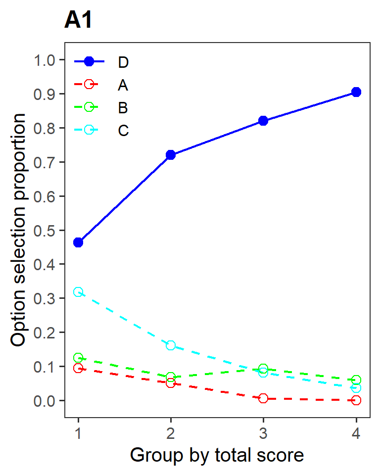
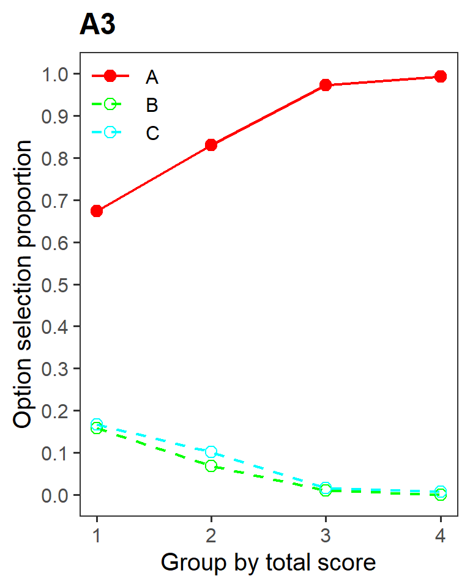
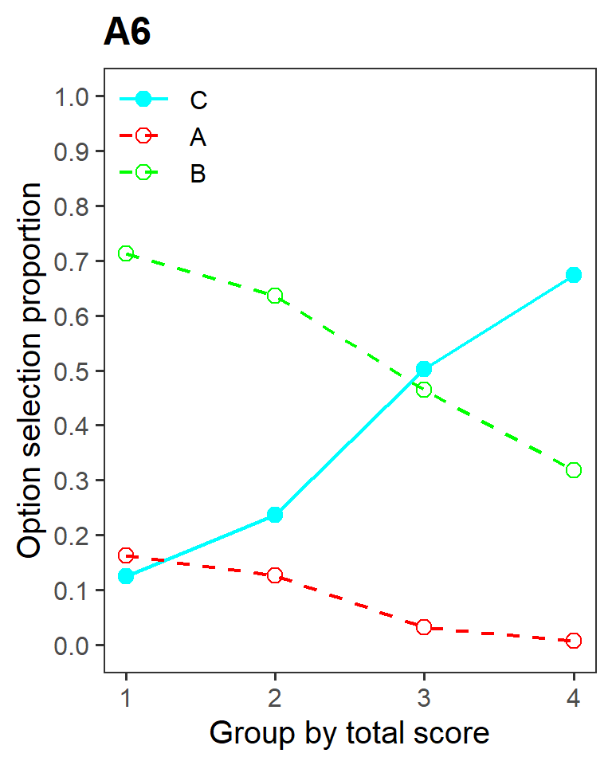
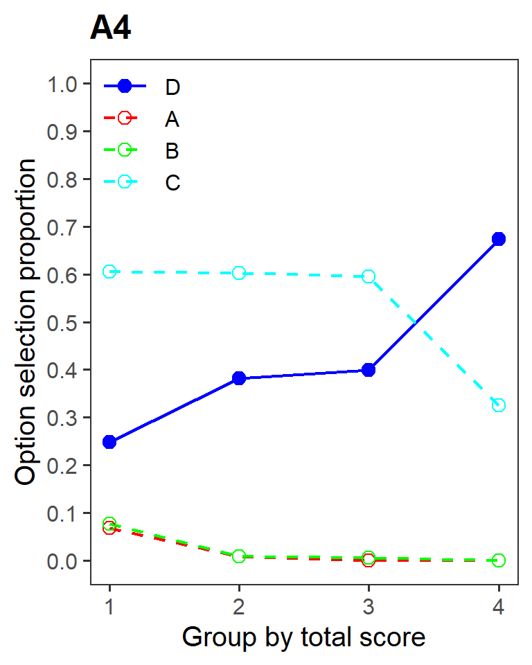
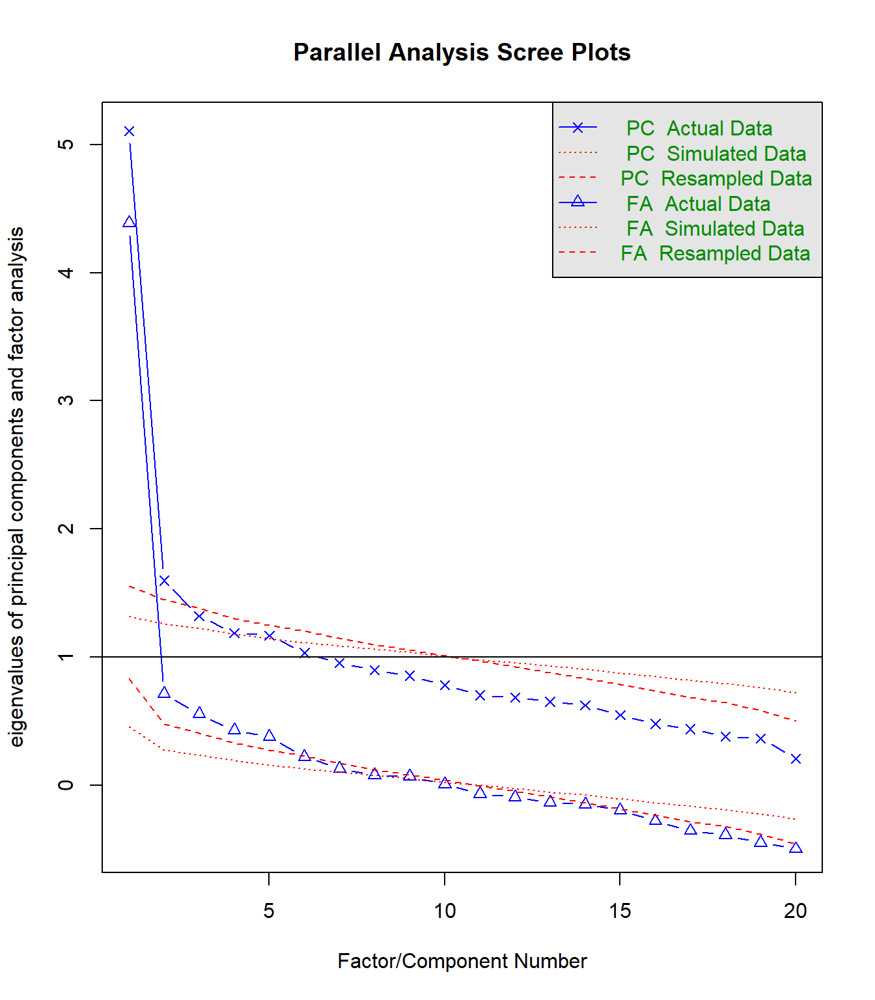

### Load the dataset and required packages
library(ShinyItemAnalysis)
library(psych)
data("HCIdata")
### Extract variables to facilitate analysis
items_unscored <- HCIdata[ , 1:20]
items_scored <- HCIdata[ ,21:40]
total_scores <- HCIdata$totalProject 1 - Foundational Analyses using Multiple-Choice Response Data from an Achievement Test
Introduction
The goal of this project is to analyze data collected from a multiple-choice achievement test. This data format is common within educational measurement, and contains one observation (row) per test-taker and one column per item, with each cell containing an unscored item response.
In this project, we will be analyzing the Homeostasis Concept Inventory (HCI) (McFarland et al., 2017), which is a 20-item multiple-choice test designed to measure undergraduate students’ understanding of the homeostasis concept. The HCI was developed through an iterative process which involved identifying common student misconceptions through think-aloud interviews and expert feedback, and developing distractors based on these misconceptions.
The dataset HCIdata is part of the {ShinyItemAnalysis} R package (Martinková & Drabinová, 2018) and contains N=669 observations which were collected as part of the validation process for the final version of the HCI (McFarland et al., 2017). Notably, the dataset contains both the scored and unscored item responses, which allows for distractor analysis, as well as matching variables such as gender and minority membership, which allows for differential item functioning (DIF) analyses.
The HCIdata dataset contains 49 variables. The first 20 variables (1-20) are the unscored item responses which are recorded as A/B/C/D. The next 20 variables (21-40) are the scored item responses which are recorded as 0/1. The next variable (41) is the total/sum score. The last 8 variables (42-49) are demographic variables including gender, plans to major in the life sciences, class level/year in college, ethnicity, minority membership, English as the student’s first language, course type, and type of school. A complete description of this dataset can be found in the documentation for the {ShinyItemAnalysis} package (Martinková & Drabinová, 2018) and additional information can also be found in the validation study for the HCI (McFarland et al., 2017).
Dataset Preparation and Preliminary Inspection
First, the dataset and the required R packages were loaded into RStudio, and variables from the dataset were extracted to facilitate analysis. The dataset contained no missing values, so no treatment of missing values is needed.
Before performing any analyses, a preliminary inspection of the total score distribution provides a useful overview of the instrument’s performance and suitability for subsequent analyses. This can be done by examining a histogram and descriptive statistics of the total scores. Some key issues to look for include: excessive skewness (which indicates a floor or ceiling effect), multimodality (which may indicate multidimensionality or distinct subgroups in the sample), and insufficient variability in scores (which can attenuate or destabilize estimates due to restriction of range; this may be indicated by a large positive kurtosis).
hist(total_scores)
describe(total_scores) vars n mean sd median trimmed mad min max range skew kurtosis se
X1 1 669 12.13 3.65 12 12.22 4.45 3 20 17 -0.17 -0.68 0.14Overall, the total score distribution looks healthy. The mean of 12.13 indicates that the average student scored roughly 60.7%, which suggests that the difficulty of the test is well-aligned with the target population. The skewness of -0.17 is very small and indicates no ceiling or floor effects. The kurtosis of -0.68 indicates that the distribution is slightly platykurtic (flatter peak/thinner tails), which is desirable for differentiating students across the middle range of the score distribution. Lastly, the histogram and the standard deviation of 3.65 suggests that there is sufficient variation in the total scores.
Classical Reliability and Item Analysis
The internal consistency reliability of the composite scores may be estimated using the coefficient alpha based on Pearson correlations (Phi coefficients). Additionally, since the items are dichotomously scored but are hypothesized to reflect an underlying normally distributed attribute, it may be helpful to estimate the ordinal alpha based on tetrachoric correlations, which represents the hypothetical reliability of the underlying attribute scores.
Both the Pearson correlation (Phi coefficient) and the tetrachoric correlation depend on the item difficulties. Both methods most accurately reflect the true linear relationship when the item difficulties are close to p = 0.5 (the mean of the underlying attribute distribution). When the item difficulties are closer to the extremes, the Phi coefficient is known to be attenuated (biased low), and the tetrachoric correlation remains unbiased but is less precise (larger standard errors).
It is useful to report both the coefficient alpha and the ordinal alpha for two reasons. The first reason is the difference in interpretation, which was briefly mentioned above. The coefficient alpha is an estimate of the reliability of the composite scores and reflects the reliability of the instrument as it is operationally scored and used. The ordinal alpha is an estimate of the reliability of the underlying attribute distribution, which reflects the theoretical reliability of measurement if the underlying attribute could be measured without information loss from being dichotomously scored. The second reason for reporting both estimates is that the difference between the estimates itself provides useful diagnostic information. If the ordinal alpha is not much higher than the coefficient alpha, then this suggests that there is little information loss from dichotomous scoring. Conversely, a substantial gap suggests that the item set includes more extreme difficulty values, and that meaningful information is loss by dichotomous scoring.
### Coefficient alpha using Pearson correlations
alpha(items_scored)[c("total", "feldt")]$total
raw_alpha std.alpha G6(smc) average_r S/N ase mean sd
0.7161644 0.7215166 0.7300311 0.1146869 2.590878 0.0158408 0.6064275 0.1825975
median_r
0.1205056
$feldt
95% confidence boundaries (Feldt)
lower alpha upper
0.68 0.72 0.75### Ordinal alpha using tetrachoric correlations
tetra <- tetrachoric(items_scored)alpha(tetra$rho)[c("total", "feldt")]$total
raw_alpha std.alpha G6(smc) average_r S/N median_r
0.8295802 0.8295802 0.8587097 0.1957491 4.867863 0.2072622
$feldt
95% confidence boundaries (Feldt)
lower alpha upper
0.7 0.83 0.92The coefficient alpha estimate is 0.72 (95% CI [.68, .75]) and the ordinal alpha estimate is 0.83 (95% CI [.70, .92]). The difference is fairly substantial and suggests that the item set contains items with extreme difficulty values, and that there is meaningful information loss from dichotomous scoring. Furthermore, the width of the confidence interval for the ordinal alpha estimate is 0.22, compared to 0.07 for the coefficient alpha estimate. This is consistent with the tetrachoric correlation being a less precise reflection of the true linear relationship when the item difficulty values are extreme, as mentioned earlier.
The internal consistency of the composite scores likely falls within the “acceptable” range according to the recommendations of Nunnally & Bernstein (1994). However, given that the instrument was designed to measure a single construct, this level of internal consistency is not particularly strong. Additionally, the recommendation by Nunnally is for early-stage research and classroom practice, and is below levels recommended for high-stakes decisions. Thus, the instrument is recommended for use in classroom settings, but should not be used as the sole basis for high-stakes decisions.
Next, the classical item difficulty, discrimination, and alpha-if-dropped are calculated and summarized in the table below. For item discrimination, both the item-total and the item-rest correlations are reported as point-biserial correlations, consistent with standard practice in classical item analysis.
CTT_results <- data.frame(
difficulty = round(colMeans(items_scored), 3),
discrimination_IT = round(ItemAnalysis(items_scored)$RIT, 3),
discrimination_IR = round(ItemAnalysis(items_scored)$RIR, 3),
alpha_drop = round(alpha(items_scored)$alpha.drop$raw_alpha, 3)
)
CTT_results difficulty discrimination_IT discrimination_IR alpha_drop
QR1 0.695 0.410 0.298 0.704
QR2 0.750 0.334 0.222 0.711
QR3 0.848 0.430 0.344 0.702
QR4 0.399 0.305 0.177 0.715
QR5 0.445 0.390 0.265 0.707
QR6 0.359 0.458 0.345 0.700
QR7 0.541 0.240 0.106 0.722
QR8 0.703 0.440 0.330 0.701
QR9 0.429 0.344 0.217 0.712
QR10 0.641 0.387 0.267 0.707
QR11 0.770 0.397 0.293 0.705
QR12 0.577 0.421 0.300 0.704
QR13 0.601 0.477 0.363 0.698
QR14 0.755 0.441 0.339 0.701
QR15 0.435 0.431 0.311 0.703
QR16 0.604 0.484 0.371 0.697
QR17 0.291 0.173 0.049 0.725
QR18 0.789 0.506 0.416 0.695
QR19 0.779 0.455 0.358 0.700
QR20 0.717 0.443 0.336 0.701Notably, item 17 has very low discrimination (RIR = .049) as well as being a challenging item (p = .291). This indicates that item 17 is highly problematic, since individuals who correctly answered the item were not meaningfully more likely to have a higher total score. This is consistent with item QR17 having an alpha-if-dropped of 0.725, which is higher than the overall coefficient alpha estimate. Thus, item 17 is recommended for revision.
Additionally, item 7 (p = .541, RIR = .106, \(\alpha_{drop}\) = .722) and item 4 (p = .399, RIR = .177, \(\alpha_{drop}\) = .715) have low discrimination which is not attributable to floor or ceiling effects. Thus, these two items may also warrant revision.
In conclusion, the classical reliability analysis suggests that the internal consistency of the total scores likely falls within the “acceptable” range according to the recommendations of Nunnally & Bernstein (1994). Furthermore, the difference between the coefficient alpha and the ordinal alpha suggests that there is meaningful information loss from dichotomous scoring. Additionally, the classical item analysis suggests that item 17, item 7, and item 4 have poor discrimination and may benefit from revision, in order of importance.
Classical Distractor Analysis
Before performing distractor analysis, there is a minor issue with the HCIdata dataset that needs to be corrected. Item 5 (A5) should have four response options (A/B/C/D). However, looking at the dataset, two entries have been incorrectly coded as lowercase “c” rather than uppercase “C”, resulting in the variable having 5 factor levels (A/B/C/c/D). This can be easily corrected using the fct_recode() function in the {forcats} package, which is part of the tidyverse family of R packages.
## Load the forcats package
library(forcats)
## Correct the data entry issue for item 5
items_unscored$A5 <- fct_recode(items_unscored$A5, "C" = "c")Now the two factor levels have been merged. Looking at the dataset, item A5 now has 4 factor levels (A/B/C/D), which is correct. Note that not all items have 4 factor levels; the majority have either 3 or 4 factor levels, with a few items having 5 factor levels. There are no additional issues with the dataset, so we may proceed with distractor analysis.
Distractor analysis may be divided into “classical” and “model-based” approaches. This section covers classical distractor analysis, while a later section will cover model-based approaches such as the nominal response model (NRM). Classical distractor analysis primarily involves examining statistics such as the proportions of test-takers who select each distractor and the point-biserial or biserial correlations between each distractor and the total scores. The primary goal of classical distractor analysis is to guide item development by identifying non-functioning or non-discriminating distractors.
Non-functioning distractors are distractors which are selected by a very low percentage of test-takers. A common rule-of-thumb is that distractors which are selected by less than 5% of test-takers are non-functioning. However, an exception to this rule can be made for very easy items. For instance, for a multiple-choice item in which 85% of test-takers chose the correct answer, it is likely that many of the distractors would be considered non-functioning under the 5% rule. However, such distractors are not necessarily problematic, and such items can still have good discrimination and be useful for content coverage purposes.
Non-discriminating distractors are distractors which are equally likely to be selected across the total score range. Good distractors test for misconceptions which are more common in test-takers with a lower total score. As total score increases, test-takers are expected to not have as many misconceptions, and thus should be less likely to select the distractors. If a distractor is roughly equally likely to be selected by all test-takers, no matter their total score, then this suggests that the functioning of the distractor may be unrelated to the construct of interest. For instance, the distractor may be selected due to confusing language or an unintentional cue in the item stem. Typically, the non-discriminating distractors of interest are those which are not also non-functioning, otherwise they would be simply considered non-functioning.
An effective and efficient way to screen for non-functioning and non-discriminating distractors is to examine trace plots, which are also called distractor plots. Distractor plots can be created using the plotDistractorAnalysis() function in the {ShinyDataAnalysis} package. To make the plots look a little nicer, the {ggplot2} and {patchwork} packages are also used.
## Load packages
library(ggplot2)
library(patchwork)
## Create the distractor plots for all 20 items
distractor_plots <- plotDistractorAnalysis(
Data = items_unscored,
key = HCIkey,
num.groups = 4,
item = "all"
)
## Make all plots have the same color scheme for response options
## Also make all plots have more tick marks on the vertical axis
for (i in seq_along(distractor_plots)) {
distractor_plots[[i]] <- distractor_plots[[i]] +
scale_color_manual(values = c(A = "red",
B = "green",
C = "cyan",
D = "blue",
E = "magenta")) +
scale_y_continuous(breaks = seq(0, 1, by = 0.1),
limits = c(0, 1))
}To understand the elements of a distractor plot, let us examine the distractor plot for item 1 below. The horizontal axis represents the total score, which has been grouped into 4 quantiles. Group 1 includes the lowest 25% of total scores, group 2 includes the next 25%, and so on. The vertical axis represents the proportion of test-takers who selected each response option. The correct answer, as defined by the scoring key, is shown using a solid line, while distractors are shown using dashed lines.
distractor_plots$A1
Now let’s examine the distractor plots for all 20 items. The plots are neatly summarized into a single multi-panel figure. The legends and axis titles are omitted for visual clarity; all plots within the mosaic use the same coloring scheme described in the code above.
## Combine all plots into a multi-panel figure
wrap_plots(distractor_plots, ncol = 4) &
theme(
plot.title = element_text(size = 7),
axis.title = element_blank(),
axis.text = element_text(size = 5),
legend.position = "none"
)
Numerical values for the selection proportions, as well as additional statistics such as the sample size for each response option and the point-biserial correlations between each response option and the total scores, are a useful supplement to the distractor plots. The DistractorAnalysis() function in the {ShinyItemAnalysis} package will provide the selection proportions by group, but it does not provide the additional statistics. Thus, I prefer the {CTT} package which has a very similar function called distractorAnalysis(). In fact, the function in the {ShinyItemAnalysis} package is a modified version of the function in the {CTT} package, so the underlying code is very similar.
## Load the CTT package
library(CTT)
## Compute distractor statistics
DA_CTT <- distractorAnalysis(
items = items_unscored,
key = HCIkey,
nGroups = 4,
validResp = "fromItem",
pTable = TRUE,
digits = 2
)
DA_CTT$A1
correct key n rspP pbis discrim lower mid50 mid75 upper
A A 29 0.04 -0.25 -0.09 0.09 0.05 0.01 0.00
B B 62 0.09 -0.17 -0.07 0.12 0.07 0.09 0.06
C C 113 0.17 -0.41 -0.28 0.32 0.16 0.08 0.04
D * D 465 0.70 0.30 0.44 0.46 0.72 0.82 0.90
$A2
correct key n rspP pbis discrim lower mid50 mid75 upper
A A 98 0.15 -0.39 -0.23 0.28 0.11 0.08 0.04
B * B 502 0.75 0.22 0.33 0.59 0.73 0.84 0.92
C C 69 0.10 -0.20 -0.09 0.13 0.16 0.08 0.04
$A3
correct key n rspP pbis discrim lower mid50 mid75 upper
A * A 567 0.85 0.34 0.32 0.67 0.83 0.97 0.99
B B 47 0.07 -0.38 -0.16 0.16 0.07 0.01 0.00
C C 55 0.08 -0.33 -0.16 0.17 0.10 0.02 0.01
$A4
correct key n rspP pbis discrim lower mid50 mid75 upper
A A 17 0.03 -0.27 -0.07 0.07 0.01 0.00 0.00
B B 20 0.03 -0.26 -0.08 0.08 0.01 0.01 0.00
C C 365 0.55 -0.28 -0.28 0.61 0.60 0.60 0.33
D * D 267 0.40 0.18 0.43 0.25 0.38 0.40 0.67
$A5
correct key n rspP pbis discrim lower mid50 mid75 upper
A A 71 0.11 -0.23 -0.11 0.15 0.13 0.09 0.04
B * B 298 0.45 0.27 0.51 0.22 0.47 0.50 0.73
C C 99 0.15 -0.25 -0.11 0.20 0.15 0.11 0.10
D D 201 0.30 -0.31 -0.30 0.43 0.25 0.30 0.13
$A6
correct key n rspP pbis discrim lower mid50 mid75 upper
A A 60 0.09 -0.32 -0.16 0.16 0.13 0.03 0.01
B B 369 0.55 -0.42 -0.39 0.71 0.64 0.46 0.32
C * C 240 0.36 0.34 0.55 0.12 0.24 0.50 0.67
$A7
correct key n rspP pbis discrim lower mid50 mid75 upper
A A 77 0.12 -0.25 -0.14 0.17 0.11 0.11 0.03
B B 230 0.34 -0.26 -0.15 0.40 0.40 0.31 0.24
C * C 362 0.54 0.11 0.29 0.43 0.49 0.57 0.73
$A8
correct key n rspP pbis discrim lower mid50 mid75 upper
A A 114 0.17 -0.38 -0.29 0.32 0.16 0.09 0.03
B B 85 0.13 -0.35 -0.20 0.22 0.14 0.08 0.02
C * C 470 0.70 0.33 0.49 0.46 0.70 0.83 0.95
$A9
correct key n rspP pbis discrim lower mid50 mid75 upper
A A 315 0.47 -0.30 -0.31 0.53 0.53 0.55 0.22
B B 54 0.08 -0.29 -0.11 0.15 0.05 0.04 0.04
C C 13 0.02 -0.23 -0.06 0.06 0.00 0.00 0.00
D * D 287 0.43 0.22 0.47 0.27 0.42 0.42 0.73
$A10
correct key n rspP pbis discrim lower mid50 mid75 upper
A * A 429 0.64 0.27 0.50 0.43 0.57 0.75 0.93
B B 118 0.18 -0.32 -0.25 0.27 0.20 0.14 0.03
C C 122 0.18 -0.35 -0.25 0.30 0.23 0.11 0.04
$A11
correct key n rspP pbis discrim lower mid50 mid75 upper
A * A 515 0.77 0.29 0.37 0.58 0.75 0.89 0.96
B B 59 0.09 -0.38 -0.19 0.19 0.08 0.03 0.00
C C 95 0.14 -0.31 -0.18 0.23 0.18 0.08 0.04
$A12
correct key n rspP pbis discrim lower mid50 mid75 upper
A A 70 0.10 -0.28 -0.15 0.17 0.14 0.07 0.02
B B 12 0.02 -0.14 -0.02 0.03 0.01 0.01 0.01
C C 29 0.04 -0.21 -0.07 0.07 0.06 0.03 0.00
D * D 386 0.58 0.30 0.52 0.36 0.49 0.68 0.88
E E 172 0.26 -0.34 -0.29 0.37 0.31 0.21 0.08
$A13
correct key n rspP pbis discrim lower mid50 mid75 upper
A * A 402 0.60 0.36 0.59 0.35 0.45 0.77 0.94
B B 52 0.08 -0.29 -0.13 0.14 0.08 0.04 0.01
C C 94 0.14 -0.34 -0.21 0.24 0.19 0.06 0.03
D D 121 0.18 -0.32 -0.25 0.27 0.27 0.13 0.02
$A14
correct key n rspP pbis discrim lower mid50 mid75 upper
A * A 505 0.75 0.34 0.44 0.52 0.75 0.90 0.96
B B 35 0.05 -0.22 -0.07 0.09 0.09 0.01 0.01
C C 80 0.12 -0.32 -0.20 0.22 0.12 0.06 0.02
D D 49 0.07 -0.36 -0.17 0.17 0.04 0.03 0.00
$A15
correct key n rspP pbis discrim lower mid50 mid75 upper
A A 84 0.13 -0.25 -0.12 0.21 0.10 0.07 0.08
B B 162 0.24 -0.42 -0.35 0.39 0.33 0.15 0.04
C * C 291 0.43 0.31 0.57 0.21 0.32 0.53 0.79
D D 132 0.20 -0.15 -0.09 0.19 0.25 0.25 0.10
$A16
correct key n rspP pbis discrim lower mid50 mid75 upper
A * A 404 0.60 0.37 0.57 0.34 0.54 0.75 0.91
B B 166 0.25 -0.43 -0.37 0.41 0.31 0.15 0.04
C C 59 0.09 -0.33 -0.16 0.17 0.08 0.04 0.01
D D 40 0.06 -0.15 -0.05 0.08 0.07 0.05 0.03
$A17
correct key n rspP pbis discrim lower mid50 mid75 upper
A A 204 0.30 -0.08 0.04 0.24 0.36 0.37 0.28
B B 183 0.27 -0.30 -0.23 0.38 0.20 0.28 0.15
C * C 195 0.29 0.05 0.25 0.24 0.25 0.23 0.50
D D 87 0.13 -0.14 -0.06 0.13 0.19 0.13 0.07
$A18
correct key n rspP pbis discrim lower mid50 mid75 upper
A A 46 0.07 -0.32 -0.13 0.14 0.05 0.03 0.01
B B 70 0.10 -0.41 -0.22 0.24 0.08 0.01 0.02
C * C 528 0.79 0.42 0.43 0.54 0.84 0.95 0.97
D D 25 0.04 -0.25 -0.08 0.08 0.03 0.01 0.00
$A19
correct key n rspP pbis discrim lower mid50 mid75 upper
A A 43 0.06 -0.29 -0.11 0.12 0.07 0.03 0.01
B B 47 0.07 -0.32 -0.14 0.15 0.06 0.02 0.01
C * C 521 0.78 0.36 0.42 0.55 0.80 0.92 0.97
D D 30 0.04 -0.19 -0.07 0.08 0.05 0.02 0.01
E E 28 0.04 -0.25 -0.10 0.10 0.03 0.01 0.00
$A20
correct key n rspP pbis discrim lower mid50 mid75 upper
A A 12 0.02 -0.19 -0.05 0.05 0.01 0.00 0.00
B B 39 0.06 -0.34 -0.14 0.14 0.03 0.02 0.00
C C 138 0.21 -0.38 -0.28 0.33 0.22 0.14 0.06
D * D 480 0.72 0.34 0.46 0.48 0.74 0.84 0.94Now that the distractor plots and statistics for all 20 items are computed, let us examine the items for any issues with distractor functioning. First, a cursory glance at the distractor plots provides a useful overall picture of distractor functioning. Here are some useful guidelines when examining distractor plots:
- The correct option (solid line) should trend upwards.
- The distractors (dashed lines) should trend downwards.
- The highest total score group should not have any distractors which are selected more frequently than the correct option.
- Flat trendlines suggest non-discriminating distractors.
- Very low proportion trendlines suggest non-functioning distractors.
An example of an easy but well-discriminating item is item 3 (p = .848, RIR = .344). The correct option trends upwards, the distractors trend downwards, and the distractors are selected at a substantial proportion among lower total score groups.
distractor_plots$A3
An example of a difficult but well-discriminating item is item 6 (p = .359, RIR = .345). The correct option trends upwards, the distractors trend downwards, and the distractors are selected at a substantial proportion among lower total score groups. Since this item is quite difficult, we see that lower total score groups are much more likely to select the distractor option B, and that option B retains a substantial proportion even at higher total score groups.
distractor_plots$A6
An example of a non-functioning distractor can be found in item 12 (p = .577, RIR = .300). We see that distractor option B (green) is almost never selected, even in the lowest total score group. The exact proportions according to the table above are (.03, .01, .01, .01) for the 4 groups, from lowest to highest total score.
distractor_plots$A12
Overall, the classical distractor analysis indicates that there are relatively few problematic distractors. There are a few potentially non-functional distractors, but there are no clearly non-discriminating distractors. This is expected since the instrument was developed with distractor functioning in mind. Based on overall selection proportions, the potential non-functioning distractors include:
- Item 1: distractor A (prop = .04).
- Item 4: distractors A (prop = .03) and B (prop = .03).
- Item 9: distractor C (prop = .02).
- Item 12: distractors B (prop = .02) and C (prop = .04).
- Item 20: distractor A (prop = .02).
Earlier it was mentioned that a low overall selection proportion does not necessarily mean that the distractor is problematic. This is because the item may be an easy item, in which case low overall selection proportions are expected. Additionally, the distractor may be selected to a substantial degree by lower total score groups, but almost never selected by higher total score groups, resulting in a low overall selection proportion. Such distractors may still discriminate well, as indicated by the point-biserial correlations, even though they have a low overall selection proportion. Let us examine the potential non-functioning distractors with these considerations in mind.
For item 1, Distractor A has a moderate negative point-biserial correlation (\(r_{pbis}=-.25\)) with the selection proportions (.09, .05, .01, .00) in order from lowest to highest total score group. Since option A discriminates fairly well and is selected at a substantial frequency by lower total score groups, this distractor is likely unproblematic and does not require revision.
For item 4, distractors A and B have moderate negative point-biserial correlations (\(r_{pbis}=-.27\) and \(r_{pbis}=-.26\), respectively), but they are only selected at a substantial frequency by the lowest total score group, and are almost never selected by the other 3 groups. This suggests that distractors A and B are primarily selected due to chance guessing at low ability levels. Additionally, distractor C clearly dominates the response options, with the selection proportions (.61, .60, .60, .33). The distractor functioning indicates that this item is essentially dichotomous, and is consistent with the context found in the item stem, which essentially asks whether a homeostatic control mechanism is always functioning (option D) or if it only activates in certain scenarios (option C).
For item 9, distractor C has a moderate negative point-biserial correlation (\(r_{pbis}=-.23\)) but is essentially only selected by the lowest total score group (.06, .00, .00, .00). This suggests that distractor C is primarily selected due to chance guessing at low ability levels and may require revision.
For item 12, distractor B has a weak negative point-biserial correlation (\(r_{pbis}=-.14\)) and is essentially only selected by the lowest total score group (.03, .01, .01, .01), and distractor C has a moderate negative point-biserial correlation (\(r_{pbis}=-.21\)) and is selected at a substantial frequency in the lower total score groups (.07, .06, .03, .00). This suggests that distractor B may require revision, but distractor C is likely unproblematic.
For item 20, distractor A has a weak negative point-biserial correlation (\(r_{pbis}=-.19\)) and is essentially only selected by the lowest total score group (.05, .01, .00, .00). This suggests that distractor A is primarily selected due to chance guessing at low ability levels and may require revision. Additionally, this item is structurally similar to item 4, with the distractor functioning and item stem indicating that the item is essentially dichotomous.
An additional point worth noting is that some distractors (notably in item 15 and item 17) have a trendline which is peaked around the middle total score range. This suggests that these distractors are of a different type compared to those which trend downwards monotonically; rather than affecting lower ability individuals the most, individuals need to be at a certain ability level to possess the partial understanding required for these distractors to function. These distractors are not necessarily problematic and could be useful and informative. However, the functioning of these distractors is inconclusive under classical distractor analyses. More sophisticated methods, such as item response theory (IRT) approaches using the nominal response model (NRM), may better explain the functioning of these distractors.
In conclusion, the classical distractor analysis suggests that the distractors are functioning well in general. Item 9 (distractor C) and item 12 (distractor B) are infrequently selected and are essentially only selected by the group with the lowest 25% of total scores, which suggests that these distractors may be non-functioning and may benefit from revision. Additionally, the distractor functioning for item 4 and item 20 suggests that these items are essentially dichotomous, which is consistent with the context found in the item stems. These distractors may benefit from revision, or they may be retained as is, since these items still provide useful information about test-takers.
Optimal Scaling
Thus far, the items have been dichotomously scored by assigning each correct option a score of 1 and each incorrect option a score of 0. However, it is likely that some information is lost by dichotomous scoring. This is because dichotomous scoring treats each incorrect option as having equal value, which is unlikely since the distractors differ in their quality, as seen in the classical distractor analysis above. An alternative is to use optimal scaling, which describes a set of data-driven approaches that assign different scores to each response option by optimizing for some statistical criterion.
A common statistical criterion is to choose scores which maximize the sum of item correlations (the entries in the item correlation matrix). This is equivalent to maximizing the coefficient alpha of the instrument. The corAspect() function in the {aspect} package (Mair & de Leeuw, 2010) can be used to perform optimal scaling. By default, the corAspect() function optimizes for the sum of item correlations (aspect = "aspectSum") and assumes that the variables are nominal (level = "nominal").
## Load the aspect package
library(aspect)
## Optimizing for the sum of item correlations (and thus coefficient alpha)
opt_alpha <- corAspect(items_unscored, aspect = "aspectSum", level = "nominal")
## Examining the output (rounded to 2 decimal places)
round(opt_alpha$eigencor, 2) # Eigenvalues of the correlation matrix [1] 3.86 1.30 1.22 1.11 1.07 0.96 0.93 0.90 0.88 0.84 0.83 0.81 0.77 0.74 0.72
[16] 0.67 0.66 0.63 0.57 0.52lapply(opt_alpha$catscores, round, 2) # Optimal scores for each item$A1
score
A -2.47
B -0.23
C -1.69
D 0.60
$A2
score
A -2.23
B 0.54
C -0.74
$A3
score
A 0.41
B -2.91
C -1.77
$A4
score
A -4.52
B -3.44
C -0.01
D 0.56
$A5
score
A -1.19
B 1.10
C -1.14
D -0.64
$A6
score
A -2.01
B -0.46
C 1.21
$A7
score
A -2.25
B -0.49
C 0.79
$A8
score
A -1.38
B -1.73
C 0.65
$A9
score
A -0.08
B -2.24
C -4.39
D 0.71
$A10
score
A 0.74
B -1.17
C -1.49
$A11
score
A 0.50
B -2.72
C -1.04
$A12
score
A -1.49
B -2.13
C -2.11
D 0.80
E -0.69
$A13
score
A 0.79
B -1.83
C -1.35
D -0.78
$A14
score
A 0.55
B -1.41
C -1.30
D -2.53
$A15
score
A -1.03
B -1.37
C 0.97
D 0.19
$A16
score
A 0.77
B -1.01
C -2.07
D -0.51
$A17
score
A 1.00
B -1.55
C 0.34
D 0.14
$A18
score
A -1.93
B -1.87
C 0.52
D -2.11
$A19
score
A -1.83
B -2.13
C 0.53
D -1.31
E -2.03
$A20
score
A -3.23
B -2.65
C -0.92
D 0.56Additionally, the total scores based on optimal scores can be computed, and the relationship between the total scores can be examined by computing the correlation and creating a scatterplot.
## Compute optimal total scores
total_scores_opt <- unname(rowSums(opt_alpha$scoremat))
## Compare optimal and dichotomous total scores
round(cor(total_scores, total_scores_opt), 2)[1] 0.95plot(total_scores, total_scores_opt)
Now let us interpret the results of the optimal scaling procedure. Looking at the eigenvalues, we see that there the first eigenvalue (3.86) is much larger than subsequent eigenvalues (1.30, 1.22, 1.11, …). This suggests that the dataset is unidimensional. Additional dimensionality checks will be performed in a later section.
Looking at the optimal scores (category scores) for each item, we see that, in general, the positive values are quite modest (~0.50 to ~1.10), while the negative values can be quite extreme (e.g. -4.52). This is because distractors which are selected very infrequently can have inflated scores due to having very small sample sizes for those groups.
Furthermore, we see that, in general, the correct option has the most positive value. The only exception to this is item 17, in which the correct answer C is given an optimal score of 0.34, while the distractor A has a higher score of 1.00. This suggests that individuals who selected the distractor tended to do better on the other 19 items compared to individuals who selected the correct answer. This suggests that item 17 is problematic.
Additionally, the correlation between the total scores using dichotomous or optimal scoring is around 0.95, which suggests that the two scoring methods agree on about 90% of the variance in how individuals are rank-ordered. This suggests that there is not much to be gained from optimal scoring.
In conclusion, the results of the optimal scoring procedure suggests that (1) item 17 is problematic, since the distractor option A was given a higher score (1.00) than the correct answer C (0.34), (2) not much is gained from optimal scoring, since the correlation between the total scores using both scoring approaches is around 0.95, which suggests a shared variance of around 90%, and (3) the data is unidimensional, since there is one dominant eigenvalue.
Dimensionality Analysis
The dimensionality of the dataset can be examined using factor analysis. Before performing factor analysis, the Kaiser-Meyer-Olkin (KMO) index is a useful measure of how well-suited a dataset is for factor analysis. Here, the KMO index is calculated using the tetrachoric correlation matrix rather than the raw item responses (Pearson correlations), which is more appropriate since the items are dichotomously scored but are hypothesized to reflect an underlying continuous attribute. In fact, using Pearson correlations results in a slightly higher KMO index, but it is not shown here.
KMO(tetra$rho)Kaiser-Meyer-Olkin factor adequacy
Call: KMO(r = tetra$rho)
Overall MSA = 0.78
MSA for each item =
QR1 QR2 QR3 QR4 QR5 QR6 QR7 QR8 QR9 QR10 QR11 QR12 QR13 QR14 QR15 QR16
0.74 0.72 0.85 0.63 0.87 0.86 0.62 0.88 0.63 0.86 0.89 0.77 0.74 0.78 0.89 0.87
QR17 QR18 QR19 QR20
0.40 0.73 0.71 0.81 The overall MSA is 0.78, which is acceptable but not particularly strong. Kaiser and Rice (1974) suggested that the overall MSA should exceed .50 as a bare minimum for a correlation matrix to be suitable for factor analysis. The overall MSA is lowered by a few items with low individual MSAs: item 17 (.40), item 7 (.62), item 4 (.63), and item 9 (.63).
Next, the number of factors can be determined using parallel analysis. Parallel analysis compares the eigenvalues from the actual dataset against eigenvalues from simulated/resampled datasets of the same size. The idea is that a “real” factor should explain more variance than would be expected from chance alone.
fa.parallel(items_scored, fm = "ml", cor = "tet")
Parallel analysis suggests that the number of factors = 7 and the number of components = 3 The parallel analysis results suggest that there are 7 factors and 3 components. PCA analyzes total variance in each variable, so PCA eigenvalues tend to be larger and drop off faster. FA analyzes only the common variance between variables, so FA eigenvalues tend to be smaller and drop off more gradually. In this case, both results suggest that the dataset may have additional structure beyond a single construct. However, the eigenvalues clearly indicate that there is one dominant factor/component which is much larger than the others. This suggests that, even though additional factors may explain a significant amount of variance, the dataset is essentially unidimensional.
Next, we can fit EFA models with a different number of factors to compare their model fit. This will provide additional evidence about the dimensionality of the dataset. Since the parallel analysis suggested 3 components and 7 factors, all solutions up to 7 factors will be compared.
## Fit EFA models
fit_fa_1 <- fa(items_scored, nfactors = 1, fm = "ml", cor = "tet")fit_fa_2 <- fa(items_scored, nfactors = 2, fm = "ml", cor = "tet")fit_fa_3 <- fa(items_scored, nfactors = 3, fm = "ml", cor = "tet")fit_fa_4 <- fa(items_scored, nfactors = 4, fm = "ml", cor = "tet")fit_fa_5 <- fa(items_scored, nfactors = 5, fm = "ml", cor = "tet")fit_fa_6 <- fa(items_scored, nfactors = 6, fm = "ml", cor = "tet")fit_fa_7 <- fa(items_scored, nfactors = 7, fm = "ml", cor = "tet")## Create a table with fit statistics rounded to 3 decimal places
fit_fa_list <- list(f1 = fit_fa_1,
f2 = fit_fa_2,
f3 = fit_fa_3,
f4 = fit_fa_4,
f5 = fit_fa_5,
f6 = fit_fa_6,
f7 = fit_fa_7)
round(t(sapply(fit_fa_list, function(m) c(
chisq = m$STATISTIC,
df = m$dof,
RMSEA = m$RMSEA[1],
RMSR = m$rms,
TLI = m$TLI,
BIC = m$BIC
))), 3) chisq df RMSEA.RMSEA RMSR TLI BIC
f1 1273.675 170 0.098 0.075 0.614 167.692
f2 979.778 151 0.091 0.061 0.673 -2.596
f3 753.615 133 0.084 0.055 0.722 -111.654
f4 572.516 116 0.077 0.045 0.765 -182.155
f5 417.208 100 0.069 0.038 0.811 -233.370
f6 297.901 85 0.061 0.032 0.850 -255.091
f7 220.098 71 0.056 0.029 0.874 -241.813We see that the fit indices all improve monotonically as the number of factors increases, which is to be expected. Interestingly, the Bayesian Information Criterion (BIC) favors the 6-factor solution. The BIC rewards better model fit but also penalizes for increased complexity. A more negative BIC indicates a better model fit given its degree of complexity. We see that the BIC drops sharply at the beginning and continues to decrease until it hits a minimum in the 6-factor solution, before increasing again with the 7-factor solution. However, the BIC is not a perfect indicator of which solution should be retained. It’s a good idea to look at the factor loadings to see if they make sense.
print(fit_fa_6$loadings, cutoff = 0.2)
Loadings:
ML1 ML6 ML3 ML4 ML5 ML2
QR1 0.334 0.212
QR2 0.948
QR3 0.293 0.356
QR4 0.540
QR5
QR6 0.575
QR7 0.202
QR8 0.311 0.298
QR9 0.866
QR10 0.267
QR11 0.377
QR12 0.652
QR13 0.973
QR14 1.000
QR15 0.214
QR16 0.411 0.202
QR17
QR18 0.963
QR19 0.291 0.556
QR20 0.250 0.444
ML1 ML6 ML3 ML4 ML5 ML2
SS loadings 1.620 1.505 1.214 1.300 1.191 1.182
Proportion Var 0.081 0.075 0.061 0.065 0.060 0.059
Cumulative Var 0.081 0.156 0.217 0.282 0.341 0.401We see that a few items load almost exclusively on a single factor: item 14 (1.000), item 13 (.973), item 18 (.963), item 2 (.948), item 9 (.866). This is not a good sign and indicates that the data does not actually support having 6 factors. A few of the factors are likely just 1-2 items which have been treated as a factor. Let’s look at the communalities for the items.
fit_fa_6$communalities QR1 QR2 QR3 QR4 QR5 QR6 QR7
0.30099260 0.89476711 0.42057334 0.29527801 0.15678732 0.39276190 0.05772399
QR8 QR9 QR10 QR11 QR12 QR13 QR14
0.30481475 0.76299149 0.21722781 0.29205659 0.42655099 0.99500000 0.99500000
QR15 QR16 QR17 QR18 QR19 QR20
0.23488792 0.33491815 0.04072255 0.99500000 0.48310281 0.40916915 We see that a few items (13, 14, and 18) have communalities equal to exactly .995. These are likely Heywood cases, in which a communality reaches or exceeds 1.0. The {psych} package caps it at .995 to prevent it from actually exceeding 1.0, which would be an impossible value. Additionally, we see that some items have extremely low communalities: item 7 (.058) and item 17 (.041). Thus, the 6-factor solution is almost certainly incorrect.
Looking at the communalities for the other solutions, the 5-factor, 4-factor, 3-factor, and 2-factor solutions all contain at least 1 Heywood case. The 1-factor solution is also problematic, as some items have extremely low communalities: item 4 (.043), item 7 (.024), item 9 (.082), and item 17 (.003). These items are the same ones that had a low MSA when calculating the KMO index.
In conclusion, the dimensionality of the instrument is inconclusive. EFA solutions with 1 to 7 factors were compared. The fit statistics improved monotonically as the number of factors increased and the BIC favored the 6-factor solution. However, examination of the factor loadings and communalities indicated that all solutions except for the 1-factor solution contained Heywood cases. Additionally, a few items (4, 7, 9, and 17) were consistently found to have extremely low communalities. This suggests that these items are problematic and may need to be removed before dimensionality can be accurately assessed. However, for the purposes of subsequent IRT analyses, the dataset may be treated as essentially unidimensional, since there is one clearly dominant factor.
Item Response Theory Analysis
The {mirt} package can be used to fit 1PL (Rasch), 2PL, and 3PL IRT models.
## Load mirt package
library(mirt)
## Fit IRT models
fit_1PL <- mirt(items_scored, model = 1, itemtype = "Rasch")
fit_2PL <- mirt(items_scored, model = 1, itemtype = "2PL")
fit_3PL <- mirt(items_scored, model = 1, itemtype = "3PL",
technical = list(NCYCLES = 2000))We see that the 1PL (Rasch) and 2PL models converged quickly, but that the 3PL model took a large number of iterations (1372) to converge. This may be due to an insufficient sample size (N=669) for stable parameter estimates, and may indicate that the 3PL estimation is too unstable to be used. Let us examine the 3PL estimation further by looking at the item parameters.
round(coef(fit_3PL, IRTpars = TRUE, simplify = TRUE)$items, 2) a b g u
QR1 1.04 -0.44 0.25 1
QR2 0.73 -1.61 0.03 1
QR3 2.45 -0.67 0.47 1
QR4 0.36 1.26 0.01 1
QR5 0.69 0.37 0.01 1
QR6 1.47 0.85 0.10 1
QR7 0.22 -0.64 0.01 1
QR8 1.11 -0.96 0.00 1
QR9 0.45 0.68 0.00 1
QR10 3.66 0.54 0.48 1
QR11 1.30 -0.52 0.39 1
QR12 2.29 0.60 0.38 1
QR13 4.59 0.35 0.36 1
QR14 3.34 0.06 0.53 1
QR15 2.01 0.81 0.23 1
QR16 1.65 0.16 0.27 1
QR17 1.47 2.86 0.27 1
QR18 1.85 -1.10 0.00 1
QR19 1.44 -1.05 0.10 1
QR20 0.88 -1.19 0.02 1We see that some items have implausibly high discriminations: item 10 (3.66), item 13 (4.59), and item 14 (3.34). Furthermore, we also see that some items have implausibly low guessing parameters: item 2 (.03), item 4 (.01), item 5 (.01), item 6 (.10), item 7 (.01), item 8 (.00), item 9 (.00), item 18 (.00), item 19 (.10), and item 20 (.02). Thus, the 3PL estimation is likely too unstable to be used. We will proceed with the 1PL (Rasch) and 2PL models.
Next, the item parameters from the 1PL (Rasch) and 2PL models are summarized in the following table.
IRT_results <- data.frame(
b_1PL = round(coef(fit_1PL, IRTpars = TRUE, simplify = TRUE)$items[, "b"], 2),
b_2PL = round(coef(fit_2PL, IRTpars = TRUE, simplify = TRUE)$items[, "b"], 2),
a_2PL = round(coef(fit_2PL, IRTpars = TRUE, simplify = TRUE)$items[, "a"], 2)
)
IRT_results b_1PL b_2PL a_2PL
QR1 -0.94 -1.10 0.87
QR2 -1.25 -1.71 0.71
QR3 -1.93 -1.54 1.54
QR4 0.47 1.19 0.35
QR5 0.25 0.34 0.69
QR6 0.66 0.68 1.02
QR7 -0.19 -0.72 0.23
QR8 -0.98 -1.00 1.06
QR9 0.33 0.65 0.46
QR10 -0.67 -0.81 0.84
QR11 -1.37 -1.45 1.00
QR12 -0.36 -0.43 0.84
QR13 -0.47 -0.45 1.20
QR14 -1.28 -1.21 1.18
QR15 0.30 0.33 0.91
QR16 -0.49 -0.49 1.10
QR17 1.01 7.40 0.12
QR18 -1.50 -1.13 1.80
QR19 -1.43 -1.24 1.36
QR20 -1.06 -1.16 0.95Notably, item 17 has a very high difficulty (b = 7.40) and a very low discrimination (a = .12) under the 2PL model. This is the most clearly problematic item.
Looking at the item discriminations under the 2PL model, we see that there is a wide range of values (.12 to 1.80). Looking at the descriptive statistics below, we see that the item discriminations have a mean of .91 and a standard deviation of .42, which is a substantial amount of variation. This suggests that the equal-discrimination assumption underlying the 1PL (Rasch) model may be untenable for this dataset.
describe(coef(fit_2PL, IRTpars = TRUE, simplify = TRUE)$items[, "a"]) vars n mean sd median trimmed mad min max range skew kurtosis se
X1 1 20 0.91 0.42 0.93 0.91 0.34 0.12 1.8 1.67 -0.01 -0.43 0.09Now let us compare the fit of the 1PL (Rasch) and 2PL models. Since the models are nested, a likelihood ratio test (LRT) can be performed and relative model fit statistics can be obtained. Furthermore, absolute model fit statistics can be obtained by calculating the M2 index, which is specifically designed to compare IRT models. Additionally, item fit can be compared by calculating the S-X\(^2\) statistics for each item.
## Relative fit statistics
anova(fit_1PL, fit_2PL) AIC SABIC HQ BIC logLik X2 df p
fit_1PL 15754.85 15782.79 15791.50 15849.47 -7856.423
fit_2PL 15613.51 15666.74 15683.33 15793.75 -7766.757 179.332 19 0## Absolute fit statistics
M2(fit_1PL) M2 df p RMSEA RMSEA_5 RMSEA_95 SRMSR TLI CFI
stats 530.586 189 0 0.052 0.047 0.057 0.073 0.839 0.84M2(fit_2PL) M2 df p RMSEA RMSEA_5 RMSEA_95 SRMSR TLI CFI
stats 331.72 170 0 0.038 0.032 0.044 0.047 0.915 0.924## Item fit statistics
itemfit(fit_1PL) item S_X2 df.S_X2 RMSEA.S_X2 p.S_X2
1 QR1 13.795 13 0.010 0.388
2 QR2 18.938 13 0.026 0.125
3 QR3 23.007 13 0.034 0.042
4 QR4 31.471 12 0.049 0.002
5 QR5 13.548 12 0.014 0.330
6 QR6 14.378 13 0.013 0.348
7 QR7 60.012 13 0.074 0.000
8 QR8 16.844 13 0.021 0.207
9 QR9 22.773 12 0.037 0.030
10 QR10 28.663 13 0.042 0.007
11 QR11 5.067 12 0.000 0.956
12 QR12 16.451 13 0.020 0.226
13 QR13 30.189 13 0.044 0.004
14 QR14 17.589 13 0.023 0.174
15 QR15 12.078 12 0.003 0.439
16 QR16 16.864 13 0.021 0.206
17 QR17 76.822 13 0.086 0.000
18 QR18 29.524 12 0.047 0.003
19 QR19 25.802 12 0.041 0.011
20 QR20 10.592 13 0.000 0.645itemfit(fit_2PL) item S_X2 df.S_X2 RMSEA.S_X2 p.S_X2
1 QR1 15.246 13 0.016 0.292
2 QR2 17.623 13 0.023 0.172
3 QR3 11.381 11 0.007 0.412
4 QR4 14.176 14 0.004 0.437
5 QR5 13.448 13 0.007 0.414
6 QR6 14.133 12 0.016 0.292
7 QR7 22.093 13 0.032 0.054
8 QR8 15.620 12 0.021 0.209
9 QR9 14.697 13 0.014 0.327
10 QR10 24.253 13 0.036 0.029
11 QR11 4.070 12 0.000 0.982
12 QR12 14.443 13 0.013 0.343
13 QR13 25.126 12 0.040 0.014
14 QR14 11.853 12 0.000 0.458
15 QR15 10.253 12 0.000 0.594
16 QR16 12.331 13 0.000 0.501
17 QR17 11.980 14 0.000 0.608
18 QR18 8.338 11 0.000 0.683
19 QR19 16.342 12 0.023 0.176
20 QR20 9.373 12 0.000 0.671In terms of relative fit, the LRT is significant (\(\chi^2\) = 179.33, df = 19, p < .001), which indicates that the more complex model (2PL) fits significantly better than the less complex model (1PL/Rasch). The information criteria all agree with this result, with the 2PL model having a lower AIC by about 141 points and a lower BIC by about 56 points.
In terms of absolute fit, the 2PL model fits better according to every statistic: the M2 is about 199 points lower for the 2PL model, the SRMSR for the 2PL is .047 (compared to .073 for the 1PL), and the TLI and CFI are .915 and .924, respectively. According to conventional guidelines (SRMSR < .05, TLI > .90, CFI > .90), the 2PL model has good fit, while the 1PL model has inadequate fit.
In terms of item fit, a significant result (\(\alpha\) = .05) in the S-X\(^2\) test indicates a misfitting item. Since the S-X\(^2\) test is sensitive to sample size, it is also a good idea to look at the RMSEA for an effect size measure (conventional guideline is RMSEA < .05 indicates good fit). For the 1PL model, items 3, 4, 7, 9, 10, 13, 17, 18, and 19 show statistically significant misfit, and items 7 and 17 show practically significant misfit. For the 2PL model, items 10 and 13 show statistically significant misfit, and no items show practically significant misfit. Thus, the 2PL model has much better item fit than the 1PL (Rasch) model.
Next, let us check how well the local independence assumptions holds under both models. This can be done using Yen’s Q3 statistic.
residuals(fit_1PL, type = "Q3")Q3 summary statistics:
Min. 1st Qu. Median Mean 3rd Qu. Max.
-0.153 -0.078 -0.042 -0.037 -0.002 0.216
QR1 QR2 QR3 QR4 QR5 QR6 QR7 QR8 QR9 QR10
QR1 1.000 0.012 -0.008 -0.090 -0.067 0.040 -0.074 -0.043 -0.068 -0.024
QR2 0.012 1.000 0.146 -0.025 0.006 -0.063 -0.098 0.024 -0.111 -0.113
QR3 -0.008 0.146 1.000 -0.104 -0.008 -0.022 -0.094 0.082 -0.100 -0.016
QR4 -0.090 -0.025 -0.104 1.000 -0.056 -0.111 -0.061 -0.055 0.192 -0.145
QR5 -0.067 0.006 -0.008 -0.056 1.000 -0.048 -0.031 0.006 -0.098 -0.047
QR6 0.040 -0.063 -0.022 -0.111 -0.048 1.000 -0.038 0.033 -0.134 0.026
QR7 -0.074 -0.098 -0.094 -0.061 -0.031 -0.038 1.000 -0.046 -0.007 -0.153
QR8 -0.043 0.024 0.082 -0.055 0.006 0.033 -0.046 1.000 -0.111 -0.083
QR9 -0.068 -0.111 -0.100 0.192 -0.098 -0.134 -0.007 -0.111 1.000 -0.102
QR10 -0.024 -0.113 -0.016 -0.145 -0.047 0.026 -0.153 -0.083 -0.102 1.000
QR11 -0.079 -0.133 0.011 -0.070 -0.067 -0.015 -0.067 -0.030 -0.081 -0.002
QR12 0.044 -0.053 -0.018 -0.050 -0.070 0.087 -0.060 -0.068 -0.134 -0.021
QR13 -0.143 -0.062 0.015 -0.141 -0.034 -0.015 -0.143 -0.040 -0.136 0.058
QR14 0.038 -0.087 -0.033 -0.098 -0.027 -0.050 -0.106 -0.077 -0.074 0.025
QR15 -0.018 0.015 -0.026 -0.062 -0.056 -0.094 -0.096 -0.070 -0.125 0.009
QR16 -0.005 -0.013 -0.028 -0.058 -0.026 -0.012 -0.119 -0.015 -0.069 -0.047
QR17 -0.082 -0.081 -0.085 0.000 -0.068 -0.104 -0.003 -0.104 0.020 -0.041
QR18 -0.014 0.015 0.056 -0.106 -0.011 -0.038 -0.100 0.079 0.020 -0.032
QR19 -0.064 -0.082 0.021 -0.145 -0.068 -0.024 -0.001 0.025 -0.047 -0.028
QR20 -0.042 -0.070 -0.022 0.042 -0.105 -0.017 -0.041 -0.056 0.140 -0.070
QR11 QR12 QR13 QR14 QR15 QR16 QR17 QR18 QR19 QR20
QR1 -0.079 0.044 -0.143 0.038 -0.018 -0.005 -0.082 -0.014 -0.064 -0.042
QR2 -0.133 -0.053 -0.062 -0.087 0.015 -0.013 -0.081 0.015 -0.082 -0.070
QR3 0.011 -0.018 0.015 -0.033 -0.026 -0.028 -0.085 0.056 0.021 -0.022
QR4 -0.070 -0.050 -0.141 -0.098 -0.062 -0.058 0.000 -0.106 -0.145 0.042
QR5 -0.067 -0.070 -0.034 -0.027 -0.056 -0.026 -0.068 -0.011 -0.068 -0.105
QR6 -0.015 0.087 -0.015 -0.050 -0.094 -0.012 -0.104 -0.038 -0.024 -0.017
QR7 -0.067 -0.060 -0.143 -0.106 -0.096 -0.119 -0.003 -0.100 -0.001 -0.041
QR8 -0.030 -0.068 -0.040 -0.077 -0.070 -0.015 -0.104 0.079 0.025 -0.056
QR9 -0.081 -0.134 -0.136 -0.074 -0.125 -0.069 0.020 0.020 -0.047 0.140
QR10 -0.002 -0.021 0.058 0.025 0.009 -0.047 -0.041 -0.032 -0.028 -0.070
QR11 1.000 0.033 0.059 -0.018 -0.041 0.015 -0.057 -0.001 0.020 -0.056
QR12 0.033 1.000 -0.049 -0.008 -0.072 0.038 -0.122 -0.151 0.002 -0.105
QR13 0.059 -0.049 1.000 0.080 0.028 0.045 -0.080 0.077 -0.072 0.013
QR14 -0.018 -0.008 0.080 1.000 0.050 -0.052 -0.125 -0.042 0.020 0.095
QR15 -0.041 -0.072 0.028 0.050 1.000 -0.009 -0.078 0.003 -0.012 -0.062
QR16 0.015 0.038 0.045 -0.052 -0.009 1.000 -0.099 -0.037 -0.010 -0.071
QR17 -0.057 -0.122 -0.080 -0.125 -0.078 -0.099 1.000 -0.093 -0.045 -0.078
QR18 -0.001 -0.151 0.077 -0.042 0.003 -0.037 -0.093 1.000 0.216 -0.009
QR19 0.020 0.002 -0.072 0.020 -0.012 -0.010 -0.045 0.216 1.000 -0.059
QR20 -0.056 -0.105 0.013 0.095 -0.062 -0.071 -0.078 -0.009 -0.059 1.000residuals(fit_2PL, type = "Q3")Q3 summary statistics:
Min. 1st Qu. Median Mean 3rd Qu. Max.
-0.208 -0.075 -0.040 -0.036 -0.001 0.245
QR1 QR2 QR3 QR4 QR5 QR6 QR7 QR8 QR9 QR10
QR1 1.000 0.021 -0.048 -0.033 -0.051 0.029 -0.011 -0.059 -0.022 -0.026
QR2 0.021 1.000 0.135 0.019 0.023 -0.063 -0.048 0.021 -0.070 -0.112
QR3 -0.048 0.135 1.000 -0.057 -0.017 -0.064 -0.034 0.016 -0.076 -0.041
QR4 -0.033 0.019 -0.057 1.000 0.007 -0.046 -0.009 0.000 0.245 -0.090
QR5 -0.051 0.023 -0.017 0.007 1.000 -0.045 0.028 0.010 -0.041 -0.037
QR6 0.029 -0.063 -0.064 -0.046 -0.045 1.000 0.035 0.004 -0.083 0.005
QR7 -0.011 -0.048 -0.034 -0.009 0.028 0.035 1.000 0.020 0.048 -0.098
QR8 -0.059 0.021 0.016 0.000 0.010 0.004 0.020 1.000 -0.069 -0.104
QR9 -0.022 -0.070 -0.076 0.245 -0.041 -0.083 0.048 -0.069 1.000 -0.059
QR10 -0.026 -0.112 -0.041 -0.090 -0.037 0.005 -0.098 -0.104 -0.059 1.000
QR11 -0.088 -0.134 -0.048 -0.020 -0.061 -0.037 -0.009 -0.063 -0.044 -0.013
QR12 0.048 -0.044 -0.041 0.010 -0.053 0.071 0.004 -0.081 -0.082 -0.025
QR13 -0.184 -0.083 -0.066 -0.083 -0.045 -0.081 -0.076 -0.106 -0.097 0.021
QR14 0.017 -0.097 -0.118 -0.043 -0.026 -0.089 -0.040 -0.130 -0.036 0.005
QR15 -0.025 0.016 -0.055 0.000 -0.048 -0.136 -0.031 -0.095 -0.074 -0.006
QR16 -0.021 -0.015 -0.097 0.007 -0.021 -0.054 -0.042 -0.058 -0.019 -0.070
QR17 -0.018 -0.035 -0.008 0.050 -0.002 -0.022 0.022 -0.032 0.076 0.021
QR18 -0.077 -0.014 -0.119 -0.057 -0.031 -0.106 -0.030 -0.018 0.052 -0.075
QR19 -0.102 -0.102 -0.093 -0.094 -0.077 -0.069 0.068 -0.042 -0.014 -0.057
QR20 -0.038 -0.057 -0.075 0.102 -0.084 -0.026 0.031 -0.076 0.185 -0.070
QR11 QR12 QR13 QR14 QR15 QR16 QR17 QR18 QR19 QR20
QR1 -0.088 0.048 -0.184 0.017 -0.025 -0.021 -0.018 -0.077 -0.102 -0.038
QR2 -0.134 -0.044 -0.083 -0.097 0.016 -0.015 -0.035 -0.014 -0.102 -0.057
QR3 -0.048 -0.041 -0.066 -0.118 -0.055 -0.097 -0.008 -0.119 -0.093 -0.075
QR4 -0.020 0.010 -0.083 -0.043 0.000 0.007 0.050 -0.057 -0.094 0.102
QR5 -0.061 -0.053 -0.045 -0.026 -0.048 -0.021 -0.002 -0.031 -0.077 -0.084
QR6 -0.037 0.071 -0.081 -0.089 -0.136 -0.054 -0.022 -0.106 -0.069 -0.026
QR7 -0.009 0.004 -0.076 -0.040 -0.031 -0.042 0.022 -0.030 0.068 0.031
QR8 -0.063 -0.081 -0.106 -0.130 -0.095 -0.058 -0.032 -0.018 -0.042 -0.076
QR9 -0.044 -0.082 -0.097 -0.036 -0.074 -0.019 0.076 0.052 -0.014 0.185
QR10 -0.013 -0.025 0.021 0.005 -0.006 -0.070 0.021 -0.075 -0.057 -0.070
QR11 1.000 0.027 0.014 -0.056 -0.057 -0.016 0.006 -0.091 -0.034 -0.068
QR12 0.027 1.000 -0.085 -0.023 -0.083 0.024 -0.051 -0.208 -0.022 -0.098
QR13 0.014 -0.085 1.000 0.015 -0.021 -0.023 0.005 -0.030 -0.167 -0.023
QR14 -0.056 -0.023 0.015 1.000 0.027 -0.104 -0.049 -0.171 -0.057 0.071
QR15 -0.057 -0.083 -0.021 0.027 1.000 -0.040 -0.001 -0.041 -0.045 -0.065
QR16 -0.016 0.024 -0.023 -0.104 -0.040 1.000 -0.013 -0.144 -0.077 -0.090
QR17 0.006 -0.051 0.005 -0.049 -0.001 -0.013 1.000 -0.001 0.035 -0.005
QR18 -0.091 -0.208 -0.030 -0.171 -0.041 -0.144 -0.001 1.000 0.086 -0.088
QR19 -0.034 -0.022 -0.167 -0.057 -0.045 -0.077 0.035 0.086 1.000 -0.107
QR20 -0.068 -0.098 -0.023 0.071 -0.065 -0.090 -0.005 -0.088 -0.107 1.000The mean Q3 for the 1PL (Rasch) and 2PL models are -.037 and -.036, respectively, which are small. Additionally, the first and third quartiles are (-.078, -.002) for the 1PL (Rasch) model and (-.075, -.001) for the 2PL model. This indicates that, for the majority of items, there are no issues with local dependence. However, the large maximum values (.216 for the 1PL model and .245 for the 2PL model) indicate that there are item pairs with substantial dependence. To find the largest entries, the suppress = argument can be used to remove entries below a certain magnitude. A practical guideline is that a Q3 which is 0.20 above the mean should be flagged.
residuals(fit_1PL, type = "Q3", suppress = .20 - .037)Q3 summary statistics:
Min. 1st Qu. Median Mean 3rd Qu. Max.
-0.153 -0.078 -0.042 -0.037 -0.002 0.216
QR1 QR2 QR3 QR4 QR5 QR6 QR7 QR8 QR9 QR10 QR11 QR12 QR13 QR14 QR15 QR16
QR1 1
QR2 1
QR3 1
QR4 1.000 0.192
QR5 1
QR6 1
QR7 1
QR8 1
QR9 0.192 1.000
QR10 1
QR11 1
QR12 1
QR13 1
QR14 1
QR15 1
QR16 1
QR17
QR18
QR19
QR20
QR17 QR18 QR19 QR20
QR1
QR2
QR3
QR4
QR5
QR6
QR7
QR8
QR9
QR10
QR11
QR12
QR13
QR14
QR15
QR16
QR17 1
QR18 1.000 0.216
QR19 0.216 1.000
QR20 1residuals(fit_2PL, type = "Q3", suppress = .20 - .036)Q3 summary statistics:
Min. 1st Qu. Median Mean 3rd Qu. Max.
-0.208 -0.075 -0.040 -0.036 -0.001 0.245
QR1 QR2 QR3 QR4 QR5 QR6 QR7 QR8 QR9 QR10 QR11 QR12 QR13 QR14
QR1 1.000 -0.184
QR2 1
QR3 1
QR4 1.000 0.245
QR5 1
QR6 1
QR7 1
QR8 1
QR9 0.245 1.000
QR10 1
QR11 1
QR12 1.000
QR13 -0.184 1.000
QR14 1.000
QR15
QR16
QR17
QR18 -0.208 -0.171
QR19 -0.167
QR20 0.185
QR15 QR16 QR17 QR18 QR19 QR20
QR1
QR2
QR3
QR4
QR5
QR6
QR7
QR8
QR9 0.185
QR10
QR11
QR12 -0.208
QR13 -0.167
QR14 -0.171
QR15 1
QR16 1
QR17 1
QR18 1.000
QR19 1.000
QR20 1.000For the 1PL model, we see that there is substantial dependence between item 4 and item 9, as well as between item 18 and item 19. For the 2PL model, we see that there is substantial dependence between item 4 and item 9, as well as between item 9 and item 20. The item stems for these item pairs may be worth examining for local dependence.